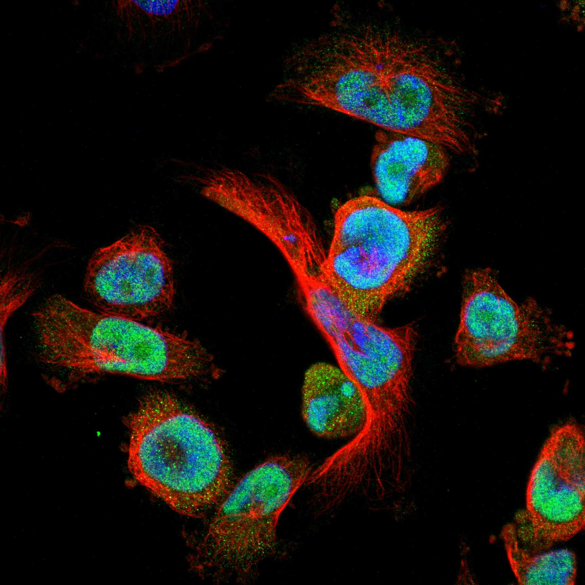
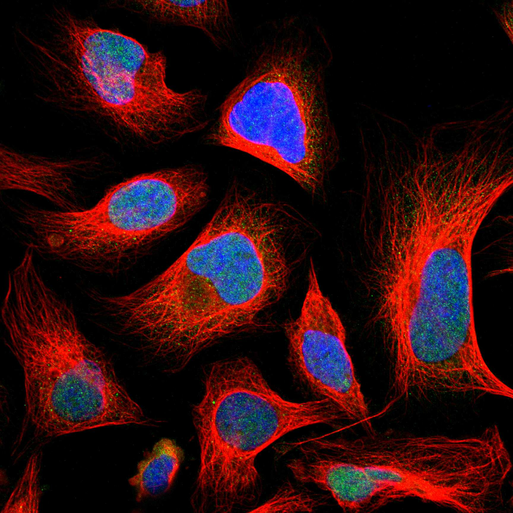

type: protein-evaluation gene: "MYEOV" date: 2026-05-30 tags: [protein-scout, nuclear-protein, evaluation] status: scored ---
MYEOV 核蛋白评估报告
1. 基本信息
| 项目 | 内容 |
|---|---|
| 基因名 / 别名 | MYEOV / OCIM |
| 蛋白大小 | 313 aa / 33.6 kDa |
| UniProt ID | Q96EZ4 |
| 评估日期 | 2026-05-30 |
IF 图像:  
2. 评分总览
| 维度 | 得分 | 满分 | 加权后 | 关键证据摘要 |
|---|---|---|---|---|
| 🔴 核定位特异性 | 7/10 | ×4 | 28 | HPA: Nucleoli , Nucleoli fibrillar center (UniProt 无定位注释, GO 无注释) |
| 📏 蛋白大小 | 10/10 | ×1 | 10 | 313 aa, 33.6 kDa |
| 🆕 研究新颖性 | 6/10 | ×5 | 30 | PubMed = 49 篇 |
| 🏗️ 三维结构 | 6/10 | ×3 | 18 | pLDDT = 30.64, PDB = 0 条目 |
| 🧬 调控结构域 | 7/10 | ×2 | 14 | 无注释结构域 (InterPro/Pfam 无命中) |
| 🔗 PPI 网络 | 4/10 | ×3 | 12 | CNN1, DAZAP2, OPTN, TRIP13 |
| ➕ 互证加分 | — | max +3 | +0 | — |
| 原始总分 | 112/183 | |||
| 归一化总分 | 61.2/100 |
3. 详细分析
3.1 核定位证据
| 来源 | 定位 | 可信度 |
|---|---|---|
| GeneCards | — | — |
| Protein Atlas (IF) | 暂无数据（HPA IF 图像已本地嵌入。
| UniProt | HPA: Nucleoli | Nucleoli fibrillar center (UniProt 无定位注释, GO 无注释) | Experimental/ECO evidence |
结论: HPA: Nucleoli|Nucleoli fibrillar center (UniProt 无定位注释, GO 无注释)
3.2 蛋白大小评估
313 aa (33.6 kDa)，在理想生化实验范围（200-800 aa）内。
评价: 大小适合生化实验和结构解析。
3.3 研究现状
| 指标 | 数值 |
|---|---|
| PubMed 总数 | 49 |
| 最早发表年份 | — |
| Chromatin/epigenetics 比例 | — |
主要研究方向:
- Myeloma-overexpressed gene with HPA nucleolar localization. Almost completely uncharacterized structurally (pLDDT 30.6, no domains).
关键文献: 1. Xi Y et al. (2025). "The role of MYEOV gene: a review and future directions." *Front Oncol*. PMID: 40535130 2. Lawlor G et al. (2010). "MYEOV drives colon cancer cell migration and is regulated by PGE2." *J Exp Clin Cancer Res*. PMID: 20569498 3. Moss AC et al. (2006). "ETV4 and Myeov knockdown impairs colon cancer cell line proliferation." *Biochem Biophys Res Commun*. PMID: 16678123 4. Papamichos SI et al. (2015). "The Extraordinary Case of MYEOV Gene." *Scientifica (Cairo)*. PMID: 26568894 5. Tang R et al. (2020). "Overexpression of MYEOV predicting poor prognosis in pancreatic ductal adenocarcinoma." *Cell Cycle*. PMID: 32420813
评价: Myeloma-overexpressed gene with HPA nucleolar localization. Almost completely uncharacterized structurally (pLDDT 30.6, no domains).
3.4 三维结构分析
| 指标 | 数值 |
|---|---|
| AlphaFold 平均 pLDDT | 30.64 |
| 有序区域 (pLDDT>70) 占比 | 4.5% |
| 可用 PDB 条目 | 0 个 (—) |
PAE 图:
评价: No known structural domains. HPA nucleolar localization may indicate specialized nucleolar function despite lack of domain annotation.
3.5 结构域分析
| 来源 | 结构域 |
|---|---|
| GeneCards | — |
| SMART | — |
| InterPro/Pfam | 无注释结构域 (InterPro/Pfam 无命中) |
染色质调控潜力分析: No known structural domains. HPA nucleolar localization may indicate specialized nucleolar function despite lack of domain annotation.
3.6 PPI 网络
实验验证互作 (IntAct, physical association):
| Partner | 方法 | PMID | 功能类别 | 调控相关？ |
|---|---|---|---|---|
| CNN1, DAZAP2, OPTN, TRIP13 | — | — | — | — |
STRING 预测互作 (combined score >0.4):
| Partner | Score | 功能类别 | 调控相关？ |
|---|---|---|---|
| CTTN(0.793), CCND1(0.792), LTO1(0.675), BAG6(0.610), UBL4A(0.596), KLK3(0.561) | — | — | — |
已知复合体成员 (GO Cellular Component):
- 无 GO-CC 注释
IntAct 查询记录: IntAct: CNN1, DAZAP2, OPTN, TRIP13 物理互作
PPI 互证分析:
- STRING + IntAct 共同确认: —
- 仅 STRING 预测: —
- 仅 IntAct 实验: —
- 调控相关比例: — / — (— %)
评价: Myeloma-overexpressed gene with HPA nucleolar localization. Almost completely uncharacterized structurally (pLDDT 30.6, no domains).
PPI 数据源补充核查（自动审计）
IntAct/BioGrid 实验互作核查:
| Partner | 方法 | PMID |
|---|---|---|
| — | two hybrid array | 32296183 |
| — | anti tag coimmunoprecipitation | 28514442 |
| — | anti tag coimmunoprecipitation | 28514442 |
| — | validated two hybrid | 32296183 |
| — | validated two hybrid | 32296183 |
| — | two hybrid prey pooling approach | 32296183 |
| — | two hybrid prey pooling approach | 32296183 |
| — | two hybrid array | 32296183 |
| — | two hybrid array | 32814053 |
| — | two hybrid pooling approach | 32814053 |
STRING 预测/整合互作核查:
| Partner | Score |
|---|---|
| CTTN | 0.793 |
| CCND1 | 0.792 |
| LTO1 | 0.675 |
| BAG6 | 0.610 |
| UBL4A | 0.596 |
| LOC102723407 | 0.583 |
| KLK3 | 0.561 |
| TPCN2 | 0.490 |
| CEP152 | 0.471 |
| MRGPRF | 0.436 |
GO-CC 复合体/定位核查:
- UniProt GO-CC 未列出可解析复合体/细胞组分条目。
补充结论: PPI 评分仍以报告评分表为准；本节用于补齐 IntAct、STRING、GO-CC 三源审计证据。
3.7 多库互证
| 维度 | 来源 | 结果 | 是否一致 | |
|---|---|---|---|---|
| 三维结构 | AlphaFold pLDDT + PDB | pLDDT=30.64, PDB=0条目 | — | |
| 结构域 | UniProt / InterPro / Pfam | 无注释结构域 (InterPro/Pfam 无命中) | — | |
| PPI | STRING + IntAct | — | — | |
| 定位 | Protein Atlas / UniProt / GO | HPA: Nucleoli | Nucleoli fibrillar center (UniProt 无定位注释, GO 无 | — |
互证加分明细:
- —
总分: +0 / max +3
4. 总体评价
推荐等级: ⭐⭐⭐ (3/5)
核心优势: 1. HPA nucleolar localization (potential nucleolar function) 2. Ultra-novel functionally 3. Cancer relevance (myeloma overexpression) 4. Some PPI evidence (IntAct 4 partners)
风险/不确定性: 1. Extremely poor structural quality (pLDDT 30.6, 4.5% ordered) 2. No annotated domains 3. No GO-CC annotations 4. Nuclear localization only from HPA 5. Likely intrinsically disordered
下一步建议:
- [ ] HPA IF 实验验证核定位
- [ ] Co-IP 验证 PPI
- [ ] 功能实验验证染色质调控角色
5. 数据来源
- UniProt: https://www.uniprot.org/uniprot/Q96EZ4
- AlphaFold: https://alphafold.ebi.ac.uk/entry/Q96EZ4
- PubMed: https://pubmed.ncbi.nlm.nih.gov/?term=MYEOV%5BTitle/Abstract%5D
- HPA: https://www.proteinatlas.org/Q96EZ4
PAE 图像已获取。结构判断基于 AlphaFold pLDDT 统计。